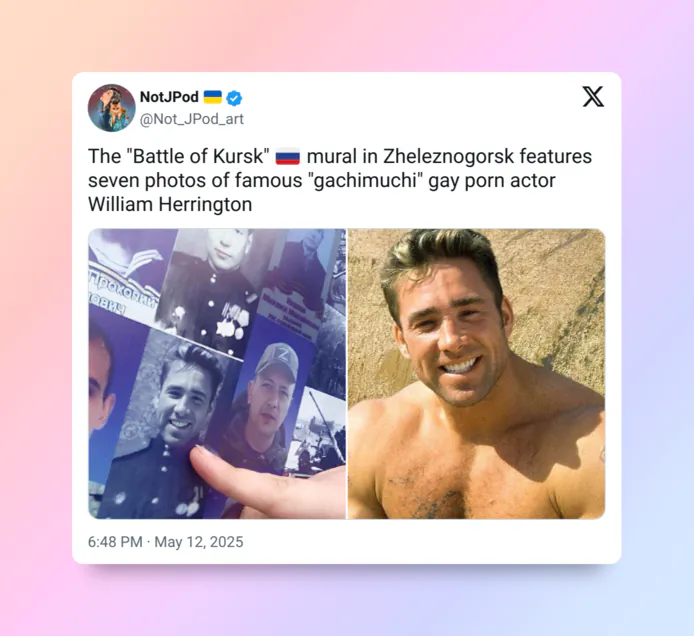
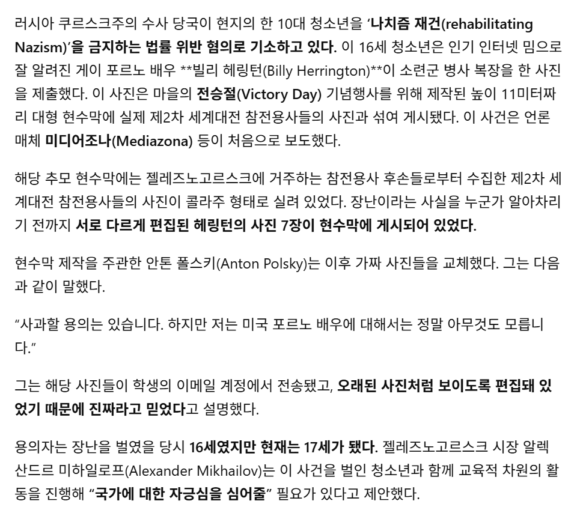
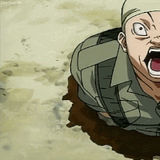
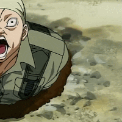

작년 러시아에서 어느 17살 소년이 전승절 80주년 및 쿠르스크 전투를 기념한 현수막에 붕탁(가치무치)으로 유명한 빌리 헤링턴을 참전용사로 합성한 사진을 보냈는데 그걸 그대로 올린 사건

해당 십대는 "나치즘 재건 혐의"(??)로 경찰에게 끌려가 정신개조당함

작년 러시아에서 어느 17살 소년이 전승절 80주년 및 쿠르스크 전투를 기념한 현수막에 붕탁(가치무치)으로 유명한 빌리 헤링턴을 참전용사로 합성한 사진을 보냈는데 그걸 그대로 올린 사건

해당 십대는 "나치즘 재건 혐의"(??)로 경찰에게 끌려가 정신개조당함
자궁심 주입
큥♥︎
자궁 심의 주입~
Oh my shoulder
Ang~♥︎
한때 붕탁계의 빛의 신이셨는데 일뽕맞고 끝내 돌아가심
??? : 제 아버지도 어머니도 토끼입니다.
개드립 건국공신


Son of Bolsheviks, Come on let's go!
자긍심 주입~